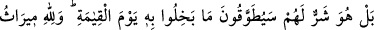

CİMRİLERİN ÂKIBETİ
180. Allah’ın, kereminden kendilerine verdiklerini (infakta) cimrilik gösterenler,
sanmasınlar ki o, kendileri için hayırlıdır; tersine bu onlar için pek fenâdır. Cimrilik
ettikleri şey de kıyâmet gününde boyunlarına dolanacaktır. Göklerin ve yerin
mirası Allah’ındır. Allah bütün yaptıklarınızdan haberdardır.
181. “Gerçekten Allah fakir, biz ise zenginiz” diyenlerin sözünü andolsun ki
Allah işitmiştir. Onların (bu) dediklerini, haksız yere peygamberleri öldürmeleri ile
birlikte yazacağız ve diyeceğiz ki: Tadın o yakıcı azabı!
182. Bu, dünyada iken kendi ellerinizle yapmış olduğunuzun karşılığıdır. Yoksa
Allah kullarına zulmetmez.
“Allah’ın kereminden kendilerine verdiklerinde cimrilik edenler, cimriliklerinin
“kendileri için” infaklarından daha “hayırlı” olduğunu “sanmasınlar. Hayır, o”
cimrilik, onları azaba dûçâr edeceğinden dolayı “kendileri için şerlidir.”
“Cimrilik ettikleri şeyler, kıyâmet günü boyunlarına dolandırılacaktır” ifadesi
“cimrilik kendileri için şerlidir” ifadesini beyân etmektedir ve: “Cimrilik ettikleri
şeyin vebâli, tasmanın boyundan ayrılmayışı gibi bunlardan ayrılmayacaktır.” demektir.
Ortada fiilen bir tasma olmadığından bu ifade istiâre-i temsîliyye kabilindendir.
Cimriliklerinin vebâl ve günahı, tasmanın daima hayvanla birlikte bulunmasına
benzetilmiştir. Âyetteki “boyunlarına dolandırılacaktır” kelimesi de bu anlama
gelmektedir. Nitekim bu mânada “falan zât, falanın boynuna tasma taktı” denmektedir.
Bir diğer görüşe göre ise âyetteki “cimrilik ettikleri şeylerin boyunlarına
dolandırılması” ifadesi hakiki mânadadır. Bu cimrilerin boynuna yılan veya ateşten bir
tasma dolandırılacaktır. Bu görüş sahipleri, ileride gelecek olan hadîsi delil
getirmektedir.
“Göklerin ve yerin mirası” yani gök ve yerdekilerin tevârüs ettikleri mal ve sadece
göktekilerin tevârüs ettiği risâletlerden ibâret olan başka şeyler, tek başlarına veya